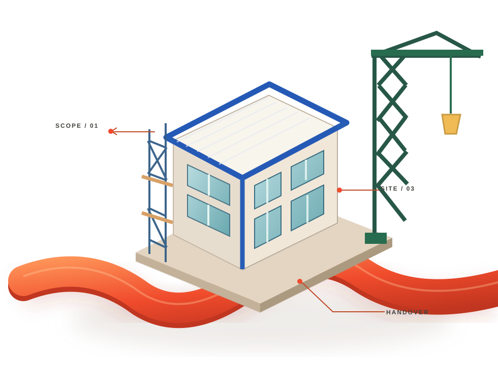

01 / OPPORTUNITY
Enquiries come in.
Follow-up falls behind.
Potential customers need clear, timely responses before an opportunity disappears.
T A A M E R A T 3 6 0 / INDUSTRY 01
From the first project enquiry to the final handover, construction businesses need more than good work. They need every conversation, commitment and next step to connect.

ILLUSTRATIVE PROCESS MODEL / NOT A CLIENT PROJECT01 / THE REAL CHALLENGE
It slows down between moments: the enquiry waiting for a reply, the quotation needing a decision, the site update nobody saw.
Potential customers need clear, timely responses before an opportunity disappears.
Scope, approvals and responsibilities need a consistent place to land.
Site teams, office staff and decision-makers need a shared view of what's next.
02 / THE CONNECTED WORKFLOW
Select a stage to see how a clearer business process can help a construction team move from first interest to completed work.
CUSTOMER DISCOVERY / FIRST CONTACT
Help relevant customers understand what you do, ask the right questions and receive a clear next step.
03 / THE SUPPORT BEHIND THE WORK
Taamerat360 focuses on the business systems surrounding a construction project—not structural design, engineering approvals or the physical construction itself.
Present the right offer and guide relevant prospects toward a conversation.
Explore the packageKeep quotation conversations, follow-ups and decisions moving.
Explore the packageMake repetitive coordination and internal handovers more consistent.
Explore the packageLink first contact, customer progress and operational follow-through.
Explore the package04 / REAL WORK. REAL EVIDENCE.
Case studies, client quotes and performance results will appear here after they are provided and approved. The page structure is already in place.
Explore your own opportunity[Client-approved challenge, approach, and measurable results]
05 / YOUR NEXT STEP
No long form and no invented figures. Choose what describes your business and we'll assemble an editable starting brief you can copy.
TAAMERAT360 / CONSTRUCTION
Choose your business type and priorities, then select “Prepare my brief” to see a starting project summary.
Your selections stay on this device until you copy them.
CONSTRUCTION / THE NEXT CONVERSATION
Let's identify the most useful next step for your construction business—then scope what should happen next.
Request a conversation